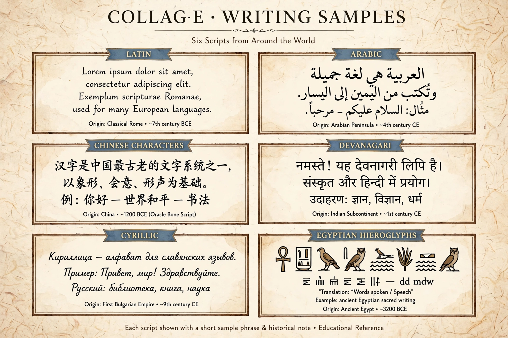

Writing system

A writing system is a method of visually representing spoken language using a set of symbols and rules. Writing appears to have been invented independently at least three or four times: in Mesopotamia (cuneiform, c. 3400 BCE), Egypt (hieroglyphs, c. 3200 BCE), China (oracle bone script, c. 1200 BCE) and Mesoamerica (by c. 500 BCE). Full writing encodes language itself — as opposed to proto-writing, which records information without directly mirroring speech.
Types
Logographic systems use a symbol per morpheme or word; Chinese characters are the principal living example. Syllabaries use a symbol per syllable, as in Japanese kana and Cherokee. Alphabets have separate letters for consonants and vowels (Latin, Greek, Cyrillic); abjads such as Arabic and Hebrew write consonants primarily, with vowels optional or omitted; abugidas such as Devanagari, used for Hindi, build consonant letters with inherent vowels modified by diacritics. Korean Hangul is a featural alphabet whose letter shapes reflect articulation.
Direction and materials
Scripts run left-to-right (Latin), right-to-left (Arabic, Hebrew), vertically (traditional Mongolian, older Chinese and Japanese) or, rarely, boustrophedon. Writing materials — clay, papyrus, parchment, paper, screens — have shaped letterforms; the rounded scripts of South India, for instance, suit palm leaves that split along straight strokes.
See also
Hieroglyphs · Braille · Grammar · Phonetics